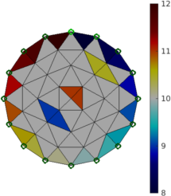
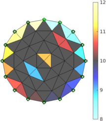
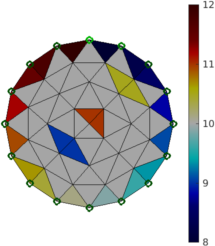
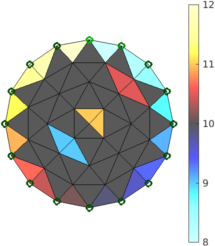

|
|
EIDORS: Electrical Impedance Tomography and Diffuse Optical Tomography Reconstruction Software |
|
EIDORS
(mirror) Main Documentation Tutorials − Image Reconst − Data Structures − Applications − FEM Modelling − GREIT − Old tutorials − Workshop Download Contrib Data GREIT Browse Docs Browse SVN News Mailing list (archive) FAQ Developer
Hosted by |
EIDORS display functions and control of coloursColour Mapping in the imageThe parameters to control the colours of an eidors image may be specified globally, or for a specific image.Specify clim=1.5 for all subsequent display
calc_colours('clim',1.5);
show_slices( img )
% future images still use clim=1.5
Specify clim=1.5 for only this image img.calc_colours.clim= 1.5; show_slices( img ) % only 'img' uses clim=1.5 Create a demo imageHere we create a small sample image with a sequence of colours around the boundary
% Show EIDORS colours $Id: eidors_colours01.m 3273 2012-06-30 18:00:35Z aadler $
% Create sample image
imdl= mk_common_model('a2c2',16);
img= mk_image(imdl.fwd_model, 0);
img.elem_data(1:2)=[1,1];
img.elem_data([14,16])=[-1,-1];
img.elem_data([27,30])=.5*[1,1];
idx= [51:52, 56:-1:53, 57:60, 64:-1:61, 49,50]; % clockwise index elements
img.elem_data(idx)= linspace(-2,2,16);
img.elem_data = img.elem_data + 10;
Change colour mapping parameters: greylev% Show EIDORS colours $Id: eidors_colours02.m 4855 2015-04-02 15:34:44Z aadler $ clf; subplot(221); clf; img1= img; img1.calc_colours.cb_shrink_move = [0.5,0.8,-.10]; clf; subplot(221); show_fem(img1,1); axis equal; axis off; axis tight; print_convert eidors_colours02a.png '-density 75' clf; subplot(221); img1.calc_colours.greylev= -0.35; show_fem(img1,1); axis equal; axis off; axis tight; print_convert eidors_colours02b.png '-density 75' clf; subplot(221); img1.calc_colours.greylev= 0.35; show_fem(img1,1); axis equal; axis off; axis tight; print_convert eidors_colours02c.png '-density 75'  



Figure: greylev values of (from left to right) 1) -.001 default, 2) -.35, 3) +.35, Change colour mapping parameters: clim% Show EIDORS colours $Id: eidors_colours03.m 4855 2015-04-02 15:34:44Z aadler $ clf; subplot(221); img1= img; img1.calc_colours.cb_shrink_move = [0.5,0.8,-.10]; clf; subplot(221) show_fem(img1,1); axis equal; axis off; axis tight; print_convert eidors_colours03a.png '-density 75' clf; subplot(221) img1.calc_colours.clim= 1; show_fem(img1,1); axis equal; axis off; axis tight; print_convert eidors_colours03b.png '-density 75' clf; subplot(221) img1.calc_colours.clim= 0.3; show_fem(img1,1); axis equal; axis off; axis tight; print_convert eidors_colours03c.png '-density 75' 


Figure: clim values of (from left to right) 1) [] default, 2) 1.0, 3) 0.3, Change colour mapping parameters: sat_adj% Show EIDORS colours $Id: eidors_colours04.m 4855 2015-04-02 15:34:44Z aadler $ clf; subplot(221); img1= img; img1.calc_colours.cb_shrink_move = [0.5,0.8,-.10]; clf; subplot(221); show_fem(img1,1); axis equal; axis off; axis tight; print_convert eidors_colours04a.png '-density 75' clf; subplot(221); img1.calc_colours.sat_adj= 0.99; show_fem(img1,1); axis equal; axis off; axis tight; print_convert eidors_colours04b.png '-density 75' clf; subplot(221); img1.calc_colours.sat_adj= 0.8; show_fem(img1,1); axis equal; axis off; axis tight; print_convert eidors_colours04c.png '-density 75' 


Figure: sat_adj values of (from left to right) 1) 0.9 default, 2) 0.90, 3) 0.8, Change colour mapping parameters: window_range% Show EIDORS colours $Id: eidors_colours05.m 4855 2015-04-02 15:34:44Z aadler $ clf; subplot(221); img1= img; img1.calc_colours.cb_shrink_move = [0.5,0.8,-.10]; clf; subplot(221); show_fem(img1,1); axis equal; axis off; axis tight; print_convert eidors_colours05a.png '-density 75' clf; subplot(221); img1.calc_colours.window_range= 0.90; show_fem(img1,1); axis equal; axis off; axis tight; print_convert eidors_colours05b.png '-density 75' clf; subplot(221); img1.calc_colours.window_range= 0.20; show_fem(img1,1); axis equal; axis off; axis tight; print_convert eidors_colours05c.png '-density 75' 


Figure: window_range values of (from left to right) 1) 0.7 default, 2) 0.9, 3) 0.2, Colours and lung images
% Show lung images $Id: eidors_colours06.m 4855 2015-04-02 15:34:44Z aadler $
load montreal_data_1995
imdl = mk_common_model('c2t2',16);
imdl.fwd_model = mdl_normalize(imdl.fwd_model,1);
imdl.RtR_prior= @prior_gaussian_HPF;
imdl.hyperparameter.value = 0.45;
img = inv_solve(imdl, zc_resp(:,1), zc_resp(:,20));
img.calc_colours.ref_level= 0;
img.calc_colours.cb_shrink_move = [0.5,0.8,-.10];
clf; subplot(221);
show_fem(img,[1,1]);
axis equal; axis off; axis tight;
subplot(222);
img.calc_colours.ref_level = 0.1;
show_fem(img,[1,1]);
axis equal; axis off; axis tight;
print_convert eidors_colours06.png '-density 75'

Figure: Lung images with the zero level centred (left) and set to an off centre value − 0.1 (right) % Show lung images $Id: eidors_colours07.m 4858 2015-04-02 15:34:51Z aadler $ img = inv_solve(imdl, zc_resp(:,1), zc_resp(:,20)); img.calc_colours.ref_level= 0; img.calc_colours.cb_shrink_move = [0.5,0.8,-.10]; clf; subplot(221); img.calc_colours.greylev = 0.01; show_fem(img,[1,1]); axis equal; axis off; axis tight; print_convert eidors_colours07a.png '-density 75' clf; subplot(221); img.calc_colours.greylev = 0.3; show_fem(img,[1,1]); axis equal; axis off; axis tight; print_convert eidors_colours07b.png '-density 75' clf; subplot(221); img.calc_colours.greylev = -0.01; show_fem(img,[1,1]); axis equal; axis off; axis tight; print_convert eidors_colours07c.png '-density 75' clf; subplot(221); img.calc_colours.cmap_type = 'draeger'; show_fem(img,[1,1]); axis equal; axis off; axis tight; print_convert eidors_colours07d.png '-density 75' 


Figure: Lung images with various colour maps. From left to right: centre-black, centre-grey, centre-white, and the Amato/Dräger Colourmap. set to an off centre value − 0.1 (right) |
Last Modified: $Date: 2017-02-28 13:12:08 -0500 (Tue, 28 Feb 2017) $ by $Author: aadler $